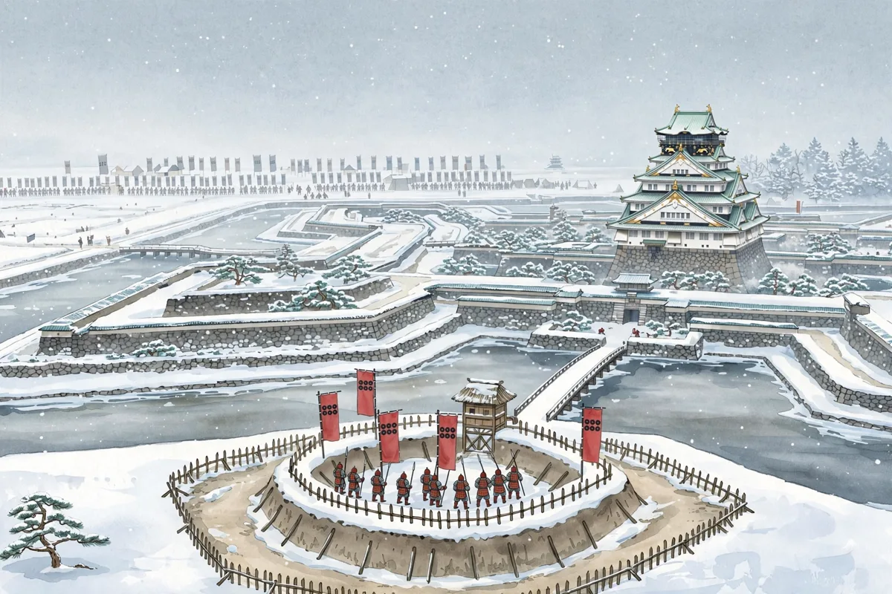

目標: 真田信繁の撃破、または真田丸の制圧（敵全滅でも勝利）
伊達軍（徳川方）
豊臣方
操作・地形情報
ユニットをクリックしてください
タップ／クリックでスキップ

慶長19年11〜12月（1614年） 摂津国 大坂城・真田丸
徳川方・伊達軍（政宗・景綱・秀宗ら） 対 豊臣方（真田信繁・長宗我部盛親・木村重成ら）
戦国最後の大戦・大坂の陣の前半。徳川家康の大軍が幾重もの堀に守られた大坂城を包囲する中、豊臣方の名将・真田信繁（幸村）が南面の弱点を補うべく築いた出丸「真田丸」が寄せ手の攻めをことごとく退けたことで知られる。47歳の伊達政宗は長男・秀宗を伴って大坂城南面に布陣し、徳川方の有力大名として戦国終幕の陣に臨んだ。